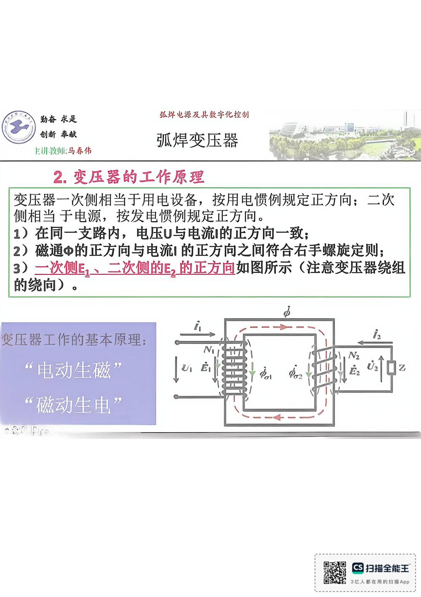

13 手写笔记/1~5周/h-w1-021 2.变压器工作原理
h-w1-021 2.变压器工作原理
📷 原图：
1~5周 焊接电源(1).pdf第 21 页（整页扫描，本库内嵌h-w1-021.jpg）
2.变压器工作原理

本页文字（OCR 整理）
- E讲敦师：马春伤
- 弧焊变压器
- 2.变压器工作原理
- 变压器一次侧相当于用电设备，按用电惯例规定正方向：二次
- 侧相当于电源，按发电惯例规定正方向。
- 1）在同一支路内，电压U与电流I的正方向一致；
- 2）磁通中的正方向与电流I的正方向之间符合右手螺旋定则；
- 3）一次侧E、二次侧韵E，的正方向如图所示（注意变压器绕组
- 变压器工作的基本原理：
- “电动生磁”
- “磁动生电”
本页重点（自动标记：含"定义/特点/要求/结论/公式"等，或与课件原句高度一致）
- 3）一次侧E、二次侧韵E，的正方向如图所示（注意变压器绕组
- 变压器工作的基本原理：
OCR 说明
文字由 macOS Vision 识别手写体/翻拍页面得到，错字难免（如"弧"误识为"孤"）；重点标记据此推断，请以页图为准。
对应讲义页
关联
- ← 上一页 · 总览 · 下一页 →
- 讲义：00 第3章 弧焊变压器 导航 · 概念：04 概念地图